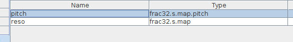
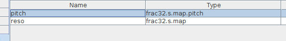

The dropdown-menus for Parameters in the patcher app has these conversion-presets such as frac32.s.map.pitch etc.
Where in the code are they defined, are they functions? It would be handy to re-use them, applying them to inlet-values


The dropdown-menus for Parameters in the patcher app has these conversion-presets such as frac32.s.map.pitch etc.
Where in the code are they defined, are they functions? It would be handy to re-use them, applying them to inlet-values
this control just output it's value in integers the same as the inputs or a normal frac32.s.map. The "fractioned" part is just the display that shows the corresponding pitch if you use the MTOFEXTENDED(..,..) code, which also outputs it's value in integers.
There are a couple of other controls that do use the MTOFEXTENDED(..,..) code inside their own behavior (eg. kdecay time as used in the AD-envelope), but these are again output as integers.
If you'ld want to set the pitch using hz, you should scale the value accordingly to get the integer value for incrementing the phase like:
freq=(float32_t)((1<<32)-1)/48000*hz;
phase+=freq;
int32_t_t s;
SINE2TINTERP(phase,s)
outlet_sine=s>>4;